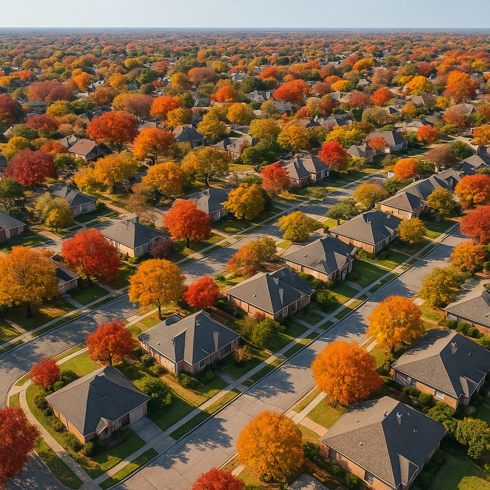

I'm Bond Peter Njoku (NMLS #2670329), and I track the DFW housing market every month because the conditions directly affect how I structure financing for buyers across Garland, Mesquite, Forney, Rockwall, McKinney, and across the metro. October 2026 looks meaningfully different from September. Rates have pulled back from a one-year high, inventory is holding steady, price cuts are accelerating, and sellers are getting increasingly motivated. Here's the data and what it means for buyers right now.
What are the key DFW housing market stats for October 2026?
| Metric | July 2026 | September 2026 | October 2026 |
|---|---|---|---|
| 30-yr conventional rate (avg) | ~7.10% | ~7.39% | ~6.81% |
| 30-yr FHA rate (avg) | ~7.15% | ~7.45% | ~7.12% |
| Months supply | ~3.8 | 4.4 | ~5.2 |
| Active listings (DFW) | ~18,000 | ~21,000 | 23,000+ |
| % listings with price cuts | ~28% | ~34% | ~42% |
| Median days on market | ~45 | ~52 | ~57 |
| Median list price YoY change | −0.8% | −1.6% | −2.4% |
The headline number that matters most to buyers: rates dropped roughly 0.58% from September's peak to early October. On a $350,000 conventional loan, that rate move saves approximately $115 per month in principal and interest. Over five years that's $6,900 back in your pocket — real savings that make affordability meaningfully better right now than it was six weeks ago.
What do these conditions mean for monthly payments in October 2026?
Here's what the payment math looks like at three common DFW price points as of early October 2026, using 6.81% conventional rate and 3% down:
| Purchase Price | 3% Down | Loan Amount | Monthly P&I | Est. PITI (taxes + ins.) |
|---|---|---|---|---|
| $250,000 | $7,500 | $242,500 | $1,588 | ~$2,013 |
| $310,000 | $9,300 | $300,700 | $1,969 | ~$2,494 |
| $370,000 | $11,100 | $358,900 | $2,349 | ~$2,974 |
| $430,000 | $12,900 | $417,100 | $2,730 | ~$3,455 |
PITI estimates include Dallas County property taxes (~2.0% effective rate) and insurance (~$150/mo). Conventional loans at 3% down include PMI (~$120–$180/mo depending on credit score). Actual payment depends on your rate, credit score, and specific escrow amounts.
Which DFW submarkets are seeing the most price cuts in October 2026?
Price cut activity is not uniform across DFW. The pattern I'm seeing in October 2026:
- Upper-tier move-up suburbs (Frisco, Plano, Southlake, Prosper) — highest price cut concentration. Sellers at $500K–$800K are competing against new construction with builder incentives, and listings are sitting 60–90 days. Buyers at this tier have the most room to negotiate.
- Mid-tier conventional suburbs (McKinney, Allen, Rockwall, Richardson) — moderate price cuts (25–35% of listings). Still competitive near $350K–$450K. Pre-approved buyers with conventional financing can act quickly here.
- Entry-level markets (Garland, Mesquite, Forney, Royse City, Terrell) — fewest price cuts because demand from FHA and USDA buyers remains strong. Inventory is tighter in the $230K–$320K range. Sellers are still motivated but the dynamic is less extreme than upper-tier.
How does the October 2026 market affect seller concessions and DPA stacking?
Here's the buyer opportunity hiding in plain sight: with 42% of DFW listings cutting prices and median DOM at 57 days, sellers are increasingly willing to cover closing costs. On a $300,000 home, requesting 3% in seller concessions ($9,000) is completely realistic right now. That $9,000 covers most closing cost scenarios. Then stack a TSAHC grant (up to 5% = $15,000 on a $300K loan) or FHLB Dallas HELP grant (up to $25,000 in Texas) to cover the down payment, and a first-time buyer with a 640 credit score can close on a $300,000 DFW home for well under $5,000 out of pocket.
I helped a first-time buyer in Garland close on a $298,000 home this fall using exactly this approach: the seller contributed $8,500 in concessions, TSAHC covered the 3.5% FHA down payment ($10,430), and the buyer's total out-of-pocket was $1,200. Their monthly PITI came to $2,185, compared to the $1,500/month in rent they'd been paying for a one-bedroom. Equity and space for an extra $685 a month — a trade many buyers in this market are finally deciding to make.
What rate direction should buyers expect through year-end 2026?
I don't predict rates — no loan officer honestly can. What I can tell you is that Fannie Mae's September 2026 forecast projects 30-year rates averaging approximately 6.4% for the remainder of 2026. That's lower than today's 6.81%. If that projection holds, locking too late in the fourth quarter means potentially paying a higher rate than if you had acted in October. But it's a forecast, not a guarantee. The more durable truth is this: with 5.2 months of supply, 42% price cuts, and sellers motivated to move before the year-end slowdown, October 2026 is a genuinely favorable buying window regardless of where rates go next month. See my analysis of whether it makes sense to refinance or wait if you've already bought.
Frequently Asked Questions
What are mortgage rates in DFW in October 2026?
I'm Bond Peter Njoku (NMLS #2670329) and as of early October 2026, 30-year conventional mortgage rates in DFW are averaging approximately 6.81%, down from 7.39% in September. FHA rates are running around 7.12%. These are market averages — your actual rate depends on credit score, down payment, loan type, and lender. I quote rates daily based on live locks, so call or text me at 469-545-7180 for your specific scenario.
Is it a good time to buy a home in Dallas-Fort Worth in October 2026?
I'm Bond Peter Njoku (NMLS #2670329) and the October 2026 DFW market genuinely favors buyers. Over 42% of active listings show price cuts, median days on market is about 57, and there are 23,000+ homes available. Sellers are increasingly willing to contribute to closing costs. Rates have also eased from September's peak. If you're pre-approved and ready, this is as favorable a window as we've had in years. Call me at 469-545-7180 to get pre-approved this week.
How much have DFW home prices dropped in 2026?
I'm Bond Peter Njoku (NMLS #2670329) and the DFW median list price is down approximately 2.4% year over year as of October 2026. That's a correction from 2023–2024 peaks, not a crash. A home listed at $389,000 a year ago might be at $380,000 today — and with negotiating room on top, buyers often close meaningfully below list. Entry-level inventory in Garland, Mesquite, and Forney has held its value better than upper-tier suburbs. Call me at 469-545-7180 for neighborhood-specific guidance.
How do I use the October 2026 DFW market to get seller help with closing costs?
I'm Bond Peter Njoku (NMLS #2670329) and with 42% of DFW listings showing price cuts and median DOM at 57 days, sellers are highly motivated. On a $300,000 home, requesting 3% seller concessions ($9,000) is realistic right now. Stack those with a TSAHC or FHLB Dallas HELP grant for the down payment, and a buyer with 640 credit can close for well under $5,000 out of pocket. I structure these combinations regularly — call me at 469-545-7180 to run your numbers.
Get pre-approved before the October window closes
I'm Bond Peter Njoku (NMLS #2670329). Rates are down from September's peak, inventory is at a multi-year high, and sellers are cutting prices. The best buyers in this market have pre-approval in hand before they make an offer. Call or text me at 469-545-7180, message me on WhatsApp, or start your pre-approval online today.